This Stationary Test tool is supported in the Time Series Analysis App. It is used to check the stationary of a time series.
This tutorial uses App’s built-in sample project. To open this sample OPJU file:
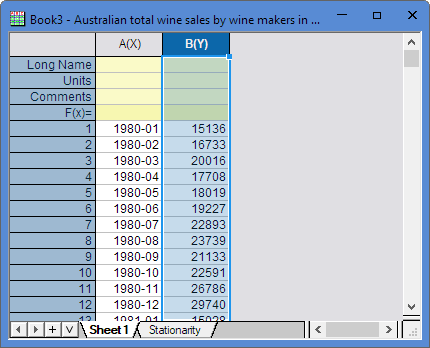
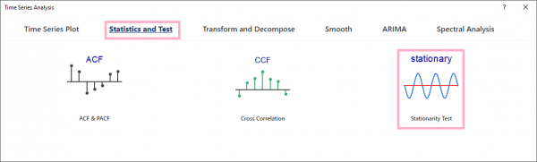
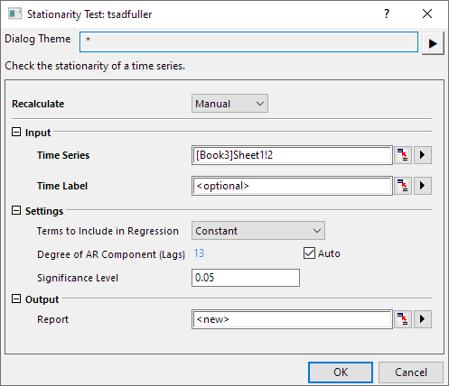
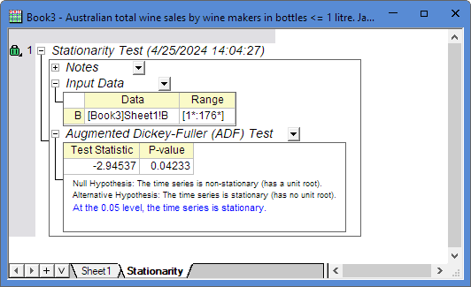
In the Augmented Dickey-Fuller (ADF) Test result table, P-value < 0.05 that means the time series dataset is stationary.Stationary Test uses Augmented Dickey–Fuller (ADF) test. If the root of the characteristic equation for a time series is one then that series is said to have a unit root. Such series are nonstationary. NAG function nag_tsa_dickey_fuller_unit (g13awc) is called to calculate ADF test statistic.
The regression model
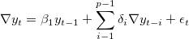
is fitted and the test statistic  constructed as
constructed as
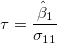
where is the difference operator, with
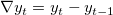
, and where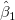
and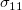
are the least squares estimate and associated standard error for respectively.
respectively.
To test for a unit root with drift the regression model
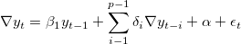
is fit and the test statistic
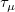
constructed as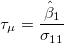
To test for a unit root with drift and deterministic time trend the regression model
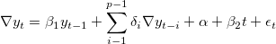
is fit and the test statistic
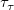
constructed as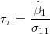
An associated probability can be obtained from nag_prob_dickey_fuller_unit (g01ewc).